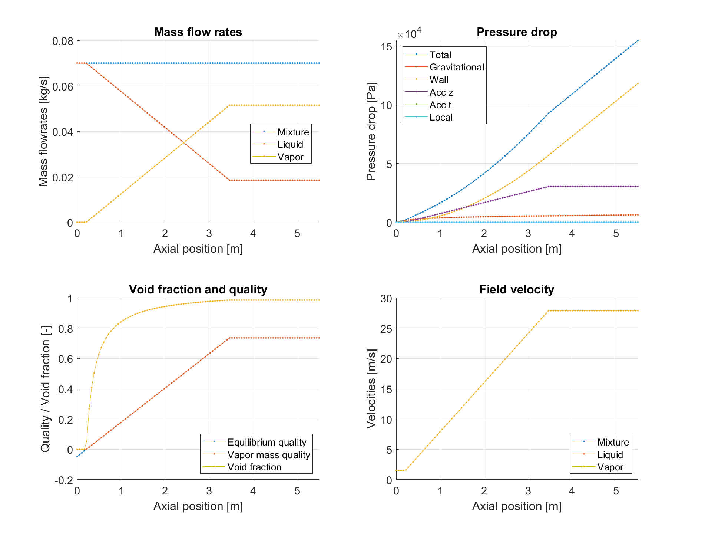

Run sample script
At this point, you are ready to run the sample script. You will see some of the basic usages of the TwoPhaseSolver.
% Clear existing variables from workspace
clearvars
% Import some of the package classes
import Inputs.*
import Solvers.*
import Solvers.Mixture.*
% InputSet is used to create a collection of input settings
inputSet = InputSet( ...
modelFilePath = './inputs/models.inp', modelID = 'BARCS', ...
optionsFilePath = './inputs/options.inp', optionsID = 'STEADY', ...
geometryFilePath = './inputs/geom.inp', geometryID = 'BARC', ...
bcFilePath = './inputs/bc_barc.inp', ...
sessionParentDir = fullfile(pwd,'outputs'), ...
overwriteSessionFiles = true, ...
LOGMODE = 'BOTH');
% Create a mixture solver
mixSolver = MixtureSolver(inputSet);
% mixSolver is initialized at construction. Here, it is explicitly initialized for clarity.
mixSolver.initializeSolver();
% Solve (does not accept any argument)
mixSolver.solve();
% Axial and temporal plots
mixSolver.plotz(1); % Axial plot at 1st time step
%mixSolver.plotz(mixSolver.NTIME); % Axial plot at final time step
%mixSolver.plott(mixSolver.NZ) % Temporal plot at last spatial node
%mixSolver.plott(mixSolver.NZ,'solveMode','STEADY') % Temporal plot at last spatial node of steady state solution
% Save results
mixSolver.saveResults(saveFormat="MAT");

Sample figure of axial distributions of mixture parameters at 0 [s].